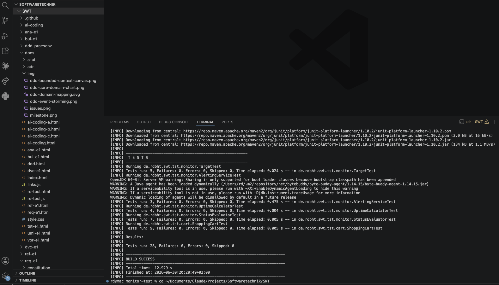

TST-E1 — Projektaufgabe Testen
Praktische Testerfahrung an einem eigenen Projekt mit Java 17, Maven, JUnit 5 und Mockito 5. Domäne ist der IT-Service-Monitor aus der AI-Coding-Aufgabe (Health-Checks, Status, Alerting), ergänzt um einen eigenständigen Shopping-Cart für den TDD-Teil. Repository: github.com/RDBHT/SWT.
Gesamtstand: 28 Tests, alle grün (Tests run: 28, Failures: 0, Errors: 0).
tst-e1/monitor-test/
├── pom.xml
└── src/
├── main/java/de/rdbht/swt/tst/
│ ├── monitor/ StatusEvaluator, Target, UptimeCalculator,
│ │ AlertingService + HttpProbe/Clock/AlertSink
│ └── cart/ ShoppingCart, LineItem (per TDD entstanden)
└── test/java/de/rdbht/swt/tst/
├── monitor/ *Test fuer Teil 1 + AlertingServiceTest (Teil 3)
└── cart/ ShoppingCartTest (Teil 2)1. Unit-Tests für eigenen Code (inkl. Exception)
Reine, deterministische Monitor-Logik ohne I/O:
| Klasse | Verantwortung | Tests |
|---|---|---|
StatusEvaluator | HTTP-Code + Antwortzeit → UP/DEGRADED/DOWN | 7 (2× Exception) |
Target | parse("host:port") mit Validierung | 5 (3× Exception) |
UptimeCalculator | SLA-Prozent über ein Fenster | 4 (1× Exception) |
Die Pflicht-Exception-Tests nutzen
assertThrows(IllegalArgumentException.class, …), z. B.
new StatusEvaluator(0), Target.parse("example.com")
(ohne Port) und ein leeres Uptime-Fenster.
Dateien (Direktlinks):
StatusEvaluator.java— HTTP-Code + Antwortzeit → Status; Exception bei ungültigem Schwellwert.Target.java—parse("host:port")mit Validierung, Exception bei ungültiger Eingabe.UptimeCalculator.java— SLA-Prozent über ein Fenster, Exception bei leerem Fenster.Status.java— Enum UP / DEGRADED / DOWN.- Tests:
StatusEvaluatorTest,TargetTest,UptimeCalculatorTest(zusammen 16 Tests, 6× Exception).
2. TDD Shopping Cart — die Git-History ist die Abgabe
Bewertet wird der Weg. Jedes Feature entstand strikt im Zyklus red → green → refactor als je ein Commit mit Zeitstempel. „Rot" scheitert bewusst (Test referenziert noch fehlenden Code → Compile-Fehler), „grün" macht ihn bestehen, „refactor" verbessert die Struktur bei grünen Tests.
test(cart): addItem/total — leerer Korb und Summe (red)
feat(cart): addItem und total implementiert (green)
refactor(cart): LineItem-Record extrahiert, drei Listen zu einer (refactor)
test(cart): removeItem entfernt Position aus der Summe (red)
feat(cart): removeItem implementiert (green)
refactor(cart): lineByName-Helfer extrahiert (refactor)
test(cart): updateQuantity berechnet Summe neu, lehnt ungültige Werte ab (red)
feat(cart): updateQuantity implementiert inkl. Validierung (green)
refactor(cart): Positionssuche in indexOf gebündelt (refactor)
test(cart): applyDiscountPercent rabattiert Summe, lehnt ungültige Prozente ab (red)
feat(cart): applyDiscountPercent implementiert (green)
refactor(cart): gross() und applyDiscount() extrahiert (refactor)Nachvollziehen: git log --oneline --grep '(cart)' und git show <red-commit>.
Eigene lokale TDD-Läufe (Feature addItem) — direkt aus der Git-Historie ausgecheckt:
3. Mocking (gewählte Variante 3)
AlertingService ist die Kernlogik: pro tick(target)
wird geprobt, der Status bewertet und erst nach einem Ausfallfenster
(z. B. 5 min) ein Alarm ausgelöst. Drei „unangenehme" Abhängigkeiten
werden per Constructor-Injection gemockt:
| Mock | Effekt in echt | Warum gemockt |
|---|---|---|
HttpProbe | Netzwerk-Request (Socket) | langsam, flaky, extern abhängig |
Clock | Systemzeit | real nicht steuerbar → 5-min-Regel sonst nur in Echtzeit testbar |
AlertSink | Alarm-Versand | soll im Test nichts verschicken; verify prüft Aufruf |
when(probe.probe(target)).thenReturn(new ProbeResult(0, 0)); // DOWN
when(clock.nowMillis()).thenReturn(0L, 60_000L, 300_000L, 360_000L); // Uhr vorspulen
// ... vier ticks ...
verify(sink, times(1)).fire(eq(target), anyString()); // Alarm genau einmal
Warum genau diese Methoden (2–3 Sätze): Ein Monitoring-Tool
besteht im Kern aus Netzwerk, Zeit und Benachrichtigung. Ein echter
HttpProbe öffnet einen Socket — langsam, flaky, fremdzustandsabhängig;
und „Alarm erst nach 5 Minuten" wäre mit echter Uhr nur in Echtzeit testbar.
Durch Mocken von Probe und Clock wird der Test deterministisch, läuft
offline in Mikrosekunden und prüft ausschließlich die Alarm-Logik.
Warum nicht Mutation Testing (Variante 4): PIT misst die Güte vorhandener Tests über mutierten Produktivcode, setzt aber deterministisch testbaren Code voraus und adressiert das Kernproblem dieser Domäne — die externen, nicht-deterministischen Abhängigkeiten — nicht. Genau das löst Mocking. Details: ADR-0001.
Lokaler Testlauf & Umgebung
Ausgeführt auf macOS. Benötigt: Homebrew,
Maven (brew install maven — zieht ein OpenJDK ≥ 17 mit) und
ein JDK ≥ 17 (Projekt kompiliert gegen release 17).
Testumgebung: JUnit 5 + Mockito 5.12; der erste Lauf
lädt die Abhängigkeiten nach ~/.m2. Befehl
cd tst-e1/monitor-test && mvn -B test →
Tests run: 28, Failures: 0, Errors: 0 — BUILD SUCCESS.

mvn -B test-Lauf (VS Code Terminal) — 28 Tests grün.Volles Protokoll: local-test-run.md.